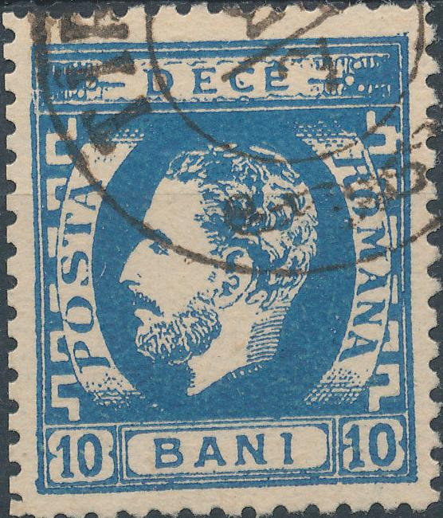
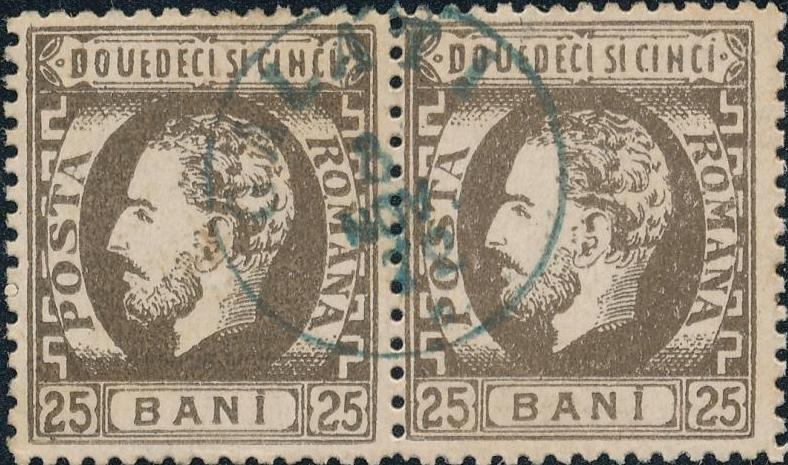
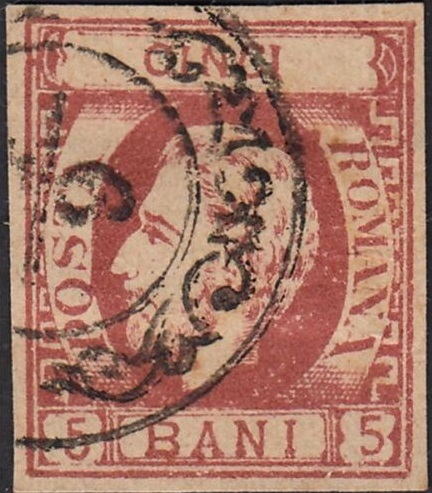
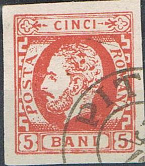
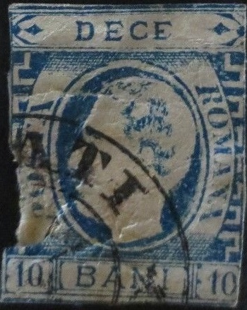

RUMANIA 1871 issue, forgeries part 2
Return To Catalogue -
Rumania 1871 issue (king with full beard)
- Rumania 1871 issue (king with full
beard), forgeries part 1 - Rumania - Cancels on stamps of Rumania
Note: on my website many of the
pictures can not be seen! They are of course present in the
catalogue;
contact me if you want to purchase it.
Rumania 1871 issue (king with full beard)
Rumania 1871 issue (king with full beard),
forgeries part 1
Forgeries exist of these stamps. According to 'The Forged
Stamps of all Countries' by J.Dorn, most of the cancellations on
the 50 b value are forged. Examples:



A forgery of the 10 b blue value. The "O" of
"ROMANA" is open at the bottom. The dot on the
"I" of "BANI" is missing. The "R"
of "ROMANA" also has a long bottom stroke, while the
"M" of this word has a slanting right leg. I've seen it
cancelled with "GALATI 8 NOV 72" and pasted on pieces
of paper. Next to it a 5 bani forgery and a pair of 25 bani
forgeries, apparently made by the same forger (same cancel!).

Possibly an Oneglia forgery of the 15 b value. The 5 b forgery
was created by erasing the value and the "1"s. It thus
has the wrong upper ornaments! The 10 bani blue also exists fromt
he same forger. Next to it a 25 b made by the same forger (also
with the wrong upper ornaments).
Forgery of the 10 Bani blue value with the head of the King
totally different (nose, hair etc.).
50 bani forgery, I've also seen it without cancel. The
"C" of "DECI" is slanting backwards.

Forgery with short leg of "R" of "ROMANA".
The "N" and "A" of this word are touching the
central design. Next to it two forgeries with the same small
"RAMNICU - SARAT 4 OCT 71" cancel, made by the same
forger.
Forgery of the 10 bani and 25 bani. Note the very crude
execution; for example the "E"s in "DOUE
DECI" in the 25 bani value.
Another primitive forgery of the 10 bani blue value.
Forgery with the head too low.

Primitive 10 c forgery with the top corner ornaments wrong (it
has the ornaments of the 50 c value).
Sperati forgeries:
10 B Sperati forgery 'die proof', image obtained from a
Corinphila auction.
I've been told that this is a Sperati forgery of the 50 b value.
I don't know the distinguishing characteristics.
A blackprint of the Sperati forgery (left outer part, right inner
part).
According to the BPA handbook the flaws of the
genuine stamp of the position which was copied by Sperati are the
same for his forgeries of the 10 B and 50 B stamps.
Very dubious items. The moustache curls up in these 15 b stamps.
Block of four 5 bani forgeries.
For issues of Rumania after 1872 click
here.
Copyright by Evert Klaseboer


{kind=link}
{kind=link}
{kind=link}
{kind=link}
{kind=link}